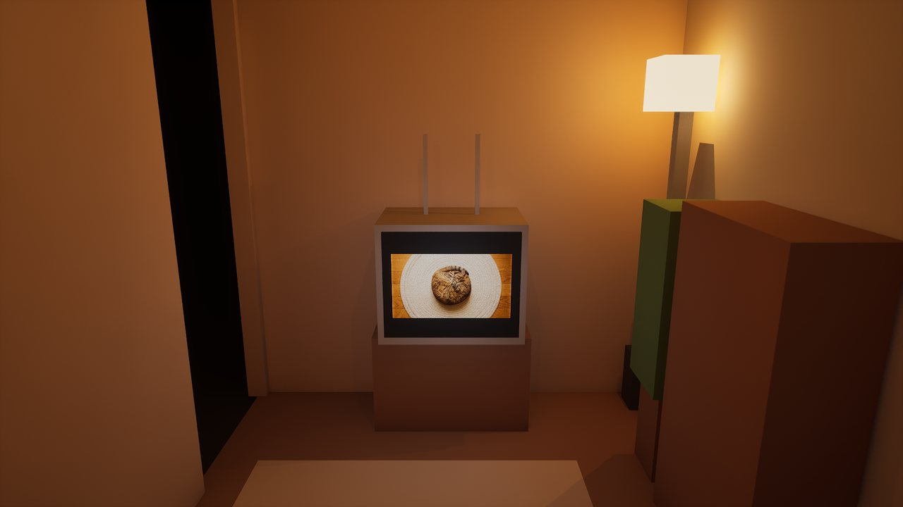

전체 현황 · 한 페이지
home — 인터랙티브 전시 '지하철에서 집으로'
AI 기반 영상 제작 워크샵 기말 프로젝트 · 크리에이티브 브릿지 페스티벌(크브페) 지원작 「Home Sweet Home」 · 3m × 3m 체험 전시 · Unreal Engine 5.4
버전이 올라갈 때마다 이 페이지 한 장에 계속 덧붙여 갑니다. 지난 버전에 확정된 내용은 그대로 두고, 바뀐 부분에는 ver7 변경 표시를 붙입니다.
0한눈에 보기
공간 설계는 거의 끝났고, 지금은 본안을 확정하고 인터랙션 구현과 크브페 지원서로 넘어가는 단계예요.
작업 갈래별 진행률 추정
브라운관 TV · 지하철 칸(손잡이, 영상 없음) · 문은 집 쪽으로 열림 · 인터랙션은 블루프린트 · 공간 치수
앉는 가구: 2인 소파 vs 1인 리클라이너 · 조명을 얼마나 희게(3500K 제안)
감지 방식, TV 켜지는 시점, 소리 종류, QR 위치, 실행 컴퓨터 등 9가지 (아래 결정 현황)
1결정 현황
정해진 것과 남은 것을 한 표에 모았어요. '추천'은 지원서 채움본에 먼저 써 둔 값이라, 다르게 정하면 그 칸만 바꾸면 돼요.
| # | 항목 | 상태 | 내용 | 근거·메모 |
|---|---|---|---|---|
| A | 공간 구성 | 확정 | 3 × 3m를 가로로 나눔: 지하철 칸(사회) 80 / 집 220 | 배치안 5종 비교 끝에 안 5 선택 |
| B | 사회–집 사이 문 | 확정 | X 190~270, 폭 80 × 210, 집 쪽으로 열림, 경첩 오른쪽, 도어클로저 | 사용자 정정(11/14) |
| C | 집 화면 | 확정 ver7 | 브라운관 TV (프로젝터 안 제외) | 11/15 확정. 8가지 변형 비교 1위 |
| D | 지하철 칸 표현 | 확정 ver7 | 손잡이·광고·노선도 등 시각 디자인만, 영상 없음 | 11/15 확정 |
| E | 인터랙션 구현 방식 | 확정 | Unreal 블루프린트 + 아두이노(키보드 입력) | 교수님 지시 |
| 1 | 앉는 가구 | 고민 중 | 2인 소파 vs 1인 리클라이너 (추천: 리클라이너) | 아래 가구 비교 |
| 2 | 집 조명 색 | 방향 확정 ver7 | 지금 2700K가 너무 붉음 → 더 희게. 제안: 3500K 웜화이트 | 사회 6500K와 대비는 유지 |
| 3 | 문 열면 켜지는 것 | 추천 | TV만 켜짐, 조명은 처음부터 켜 둠 | 220V 조명 제어는 안전 심사 부담 |
| 4 | TV 영상 시작 시점 | 추천 | 문 열면 지지직 화면 → 리모컨 누르면 영상 | 지원서 시놉시스와 설계를 둘 다 살림 |
| 5 | 행동 감지 방식 | 추천 | 물건마다 센서(방석·담요 바구니 압력, 리모컨 적외선) + CCTV는 타임랩스만 | 카메라 인식보다 오작동이 적음 |
| 6 | 지하철 칸 꾸밈 세부 | 추천 | 손잡이 14개 + 회색 벽 + 노선도·안내 출력물 + 소리 | 치수표 3번 |
| 7 | 결과 QR 위치 | 추천 | 출구 옆 태블릿 1대 | |
| 8 | 관객별 결과 페이지 | 추천 | 실제로 관객마다 생성, 휴대용 와이파이 지참 | 안 되면 견본 1개로 대체 |
| 9 | 집 배경음 | 추천 | 불멍(장작 타는 소리) | 후보: 불멍 / 눈 / 숲 |
| 10 | 불편한 소리 | 추천 | 시계 초침 빨라짐 → 휴대폰 알림 → 벽 너머 지하철 소리 | '바깥이 부른다'로 주제와 연결 |
| 11 | TV 영상 내용 | 추천 | 멍때리기 반복 영상 (Higgsfield 제작) | 후보: 매치컷 / 멍때리기 |
| 12 | 브라운관 구하기 | 추천 | 14~20인치 중고 + HDMI→AV 변환기 | 모델은 약 25인치급 크기 |
| 13 | 배정 벽 1면 용도 | 추천 | TV장·CCTV 받침 고정, 천장 설치 없음 | |
| 14 | 실행 컴퓨터 | 미정 | 누구 노트북을 전시 기간 동안 둘지 | 팀 확인 필요 |
| 15 | 전시 기간·운영 시간 | 미정 | 크브페 공고 확인 | 운영 표 작성에 필요 |
2다음 할 일
위에서부터 순서대로예요. 1번이 끝나야 3D 최종 렌더와 지원서 사진을 뽑을 수 있어요.
- 1앉는 가구 결정 (소파 vs 리클라이너)아래 가구 비교를 보고 팀에서 하나를 고른다. 나머지 결정(3~13번)도 추천과 다르면 같이 알려 주기.팀 · 10분
- 2본안 최종 렌더 (조명 3500K + 고른 가구)Unreal 레벨을 본안 하나로 정리하고 관객 시점 6장 + 설치 도면 5장 + 워크스루 영상을 다시 뽑는다.Claude · 1시간
- 3크브페 지원서 완성 → 제출채움본 문장·표를 HWP에 붙이고, 사진 11장을 바둑판으로 넣고, 파란 도움말 지우고, HWP + PDF 2개를 메일로 보낸다.지원 · 11/22까지
- 4블루프린트 0~2단계키 입력(IMC_Home) → 문 열면 TV 켜짐(BP_HomeDoor) → 앉음 감지(BP_SitZone).지원 + Claude · 1~2시간
- 5소리 파일 5개지하철 칸 소리 1개 + 집 배경음 1개 + 불편한 소리 3단계.팀 · 반나절
- 6장비 구하기브라운관 TV + HDMI→AV 변환기, Arduino Leonardo, 자석 센서, 압력 센서 2개, 적외선 수신기, USB 카메라, 스피커 2개.팀
- 7아두이노 문 센서 테스트자석 센서 1개로 문이 열리면 키가 눌리는지 확인.팀 · 1시간
- 8CCTV 마네킹 · QR 결과 화면Unreal 단독 시연용 움직이는 마네킹, 출구 태블릿에 띄울 QR·결과 페이지.Claude
3작품 개념 확정
집은 내 편이 되어 주는 공간이지만, 익숙해지면 안주하게 되는 공간이기도 하다. 관객이 편안함과 정체의 경계를 몸으로 겪게 한다.
빌드업 회의에서 정한 방향
- 출구는 소파 앞쪽에 둔다. 다음 단계로 나아가는 느낌을 주기 위해서다.
- 출구는 진짜 출구로 두고 의미를 부여한다.
- 몇 분 있었는지가 아니라 다른 사람들에 비해 얼마나 있었는지와 그 의미를 보여 준다.
- 인터랙션을 다양하게: 물건을 만지거나 오래 머물면 반응이 바뀐다.
4공간 · 안 5 지하철에서 집으로 확정
모든 치수는 cm. 자세한 수치·도면은 안 5 치수표에 있어요.

| 항목 | 치수·위치 |
|---|---|
| 전체 | 300 × 300, 벽 높이 240, 두께 10 |
| 지하철 칸 | Y 0~80 (안쪽 폭 70), 천장 215, 입구는 왼쪽 벽 전체 |
| 집 | 300 × 220 (Y 80~300) |
| 가벽 | 순수 290 = 판 ① 185 + 문 80 + 판 ② 25, 문 위 막음 판 80 × 30 |
| 사회→집 문 | X 190~270, 80 × 210, 집 쪽으로 열림 |
| 출구 | 아래쪽 벽 X 10~90 |
| 브라운관 | 왼쪽 벽 TV장 위, 화면 중심 Y 195 · 높이 76 |
| CCTV | 천장 아래 모서리 (151, 98) |
| 시청 거리 | 앉은 눈 → 화면 약 197~199 |
지하철 칸 확정 ver7: 영상 없음
- 손잡이 봉 2줄(Y 22·58, 높이 204~207), 손잡이 14개(30 간격, 고리 아래 184). 문 앞 X 200~260은 비움
- 차량 출입문·차창·광고·노선도 띠, 세로 기둥 2개
- 사람 실루엣 판 4장(키 165~178)으로 붐비는 느낌
- 형광등 띠 6500K, 낮은 천장 215(선택)
- 소리: 달리는 전철, 안내 방송, 발소리·대화
집



5가구 고민 중
브라운관은 확정, 앉는 가구만 남았어요. 담요·리모컨은 두 안 모두 들어가요.

2인 소파 (거실 구성)
| 크기 | 122 × 75 × 85(등받이), 좌판 45 |
| 화면까지 | 약 199 |
| 좋은 점 | 누구나 '집'으로 읽음, 눕듯이 기대기 쉬움, 구하기 쉬움 |
| 걸리는 점 | 실물 2인 소파는 보통 폭 140~160이라 자리(최대 122)에 들어가는지 확인 필요. 1인 체험인데 자리가 남음 |

1인 리클라이너 추천
| 크기 | 80 × 76 × 100(등받이), 좌판 45, 젖히면 발판 +50 |
| 화면까지 | 약 197 |
| 좋은 점 | 1인 체험과 맞음, 등받이를 젖히는 동작 자체가 '안주', 젖힘 센서 붙이기 쉬움, 사이드 테이블에 리모컨 |
| 걸리는 점 | 무겁고 운반이 어려움, 구하기 어려울 수 있음 |
그 밖의 집 가구 (거실 구성 기준)
| 가구 | 크기 X × Y × 높이 | 위치 | 상태 |
|---|---|---|---|
| TV장 | 40 × 74 × 48 | 왼쪽 벽 | 확정 |
| 브라운관 TV | 46 × 66 × 55 (모델 기준) | TV장 위 | 확정 |
| 담요 | 56 × 50 | 자리 위 / 바구니 | 확정 |
| 리모컨 | 14 × 11 | 팔걸이 / 사이드 테이블 | 확정 |
| 러그 | 135 × 140 | 자리 앞 | 추천 |
| 스탠드 조명 | 지름 22, 높이 172 | 왼쪽 위 모서리 | 추천 |
| 선반 | 65 × 28 × 120 | 가벽 앞 | 추천 |
| 화분 식물 | 30 × 30 × 115 | 스탠드 옆 | 추천 |
6영상 · 소리
집 TV 영상 추천
끝없이 반복되는 멍때리기 영상(불멍·커피 김 등), AI 영상 도구 Higgsfield로 제작. 지금은 테스트 영상 B_home.mp4(담요 위 커피)를 넣어 둠. 브라운관 화면 안에 16:9로 52 × 29.
소리 단계 추천
| 단계 | 소리 | 올라가는 때 |
|---|---|---|
| 0 | 장작 타는 소리 | 앉음 |
| 1 | 시계 초침이 점점 빨라짐 | 담요·리모컨·젖힘 중 하나 |
| 2 | 휴대폰 알림·진동 | 두 가지 이상 |
| 3 | 벽 너머 지하철 소리 | 230초 또는 앉은 지 3분 30초 |
지하철 칸 소리는 집과 다른 스피커로 따로 틀고, 문이 닫히면 집 안에서는 거의 안 들리게 해요.
7인터랙션 방식 확정 구현 전
Unreal 블루프린트로 구현. 아두이노 Leonardo가 컴퓨터에 키보드로 인식돼 센서가 반응하면 정해진 키(1~6)를 눌러 줘요.
| # | 관객 행동 | 감지 (추천) | 반응 | 키 |
|---|---|---|---|---|
| 1 | 문을 엶 | 문틀 자석 센서 | 브라운관 지지직 화면, 지하철 소리 끊김 | 1 |
| 2 | 앉음 · 편하게 기댐 | 방석 밑 압력 센서 (리클라이너면 젖힘 스위치) | 배경음 시작, 소리 단계 계산 시작 | 2 |
| 3 | 담요를 덮음 | 담요 바구니 밑 압력 센서 | 소리 단계 +1 | 3 |
| 4 | 리모컨을 누름 | 적외선 수신기 | 영상 시작 / 채널이 일그러졌다가 같은 영상으로 | 4 |
| 5 | 오래 머묾 | 시간 | 소리 3단계까지 | — |
| 6 | 출구로 나감 | 출구 문 센서 | 기록 저장 → 태블릿에 QR | 6 |
블루프린트 구조
| BP_HomeDirector | 상태·기록·소리 단계, 입력, TV·소리 제어, 퇴장 처리 |
| BP_HomeDoor | Timeline으로 집 쪽 90° 열림 → 저절로 닫힘 |
| BP_SitZone · BP_ExitZone | 자리·출구 감지 박스 |
| BP_Blanket · BP_Remote | 담요·리모컨을 만지면 Director에 알림 |
| BP_CCTV | Scene Capture 2D로 2초마다 타임랩스 프레임 |
| SG_Visitors · WBP_Result | 머문 시간 저장 → 평균·순위 → 결과 화면, QR |
언리얼 물체마다 이름 태그를 붙여 두어서, 레벨을 다시 지어도 블루프린트가 Get All Actors with Tag로 찾아요.
퇴장 결과 (QR)
결과 페이지 예시: 머문 시간 4분 32초, 평균 3분 00초보다 1분 32초 길게, 41명 중 6번째(상위 15%), 만진 물건 목록. 견본 보기
8장비 목록
전시장은 기자재 대여가 안 되고(스툴·드릴·사다리만 가능), 유선 인터넷도 안 돼요.
| 장비 | 수량 | 용도 | 상태 |
|---|---|---|---|
| 노트북 | 1 | Unreal 실행, 센서·카메라 연결 | 누구 장비인지 미정 |
| 브라운관 TV (14~20인치) | 1 | 집 화면 | 구해야 함 |
| HDMI→AV 변환기 | 1 | 노트북 → 브라운관 | 구해야 함 |
| Arduino Leonardo | 1 | 센서 → 키 입력 | 구해야 함 |
| 자석(리드) 센서 | 2 | 사회→집 문, 출구 문 | 구해야 함 |
| 압력 센서(FSR) | 2 | 방석, 담요 바구니 | 구해야 함 |
| 적외선 수신기 + 리모컨 | 1 | 리모컨 누름 감지 | 구해야 함 |
| USB 카메라 | 1 | CCTV 타임랩스 | 구해야 함 |
| 스피커 | 2 | 지하철 칸, 집 | 구해야 함 |
| 태블릿 | 1 | 출구 QR | 구해야 함 |
| 조명 | 3 | 지하철 LED 바 6500K, 집 스탠드 2개 3500K | 구해야 함 |
| 휴대용 와이파이 | 1 | 관객별 결과 페이지 업로드 | 구해야 함 |
| 가벽·문틀·문·도어클로저 | — | 자립 구조물 | 제작 |
| 멀티탭 | 2 | 콘센트 8구 | 구해야 함 |
9크브페 지원서
마감 11/23(월) 23:59 · transmediastudy@gmail.com · HWP + PDF 2개 · 10페이지 이내 · 맑은고딕 12/10pt, 줄간격 160%
| 항목 | 상태 | 남은 것 |
|---|---|---|
| 신청 개요 (팀명, 참여자 3명) | 완료 | |
| 작품 정보 · 재료 · 크기 | 수정 필요 | 빔프로젝터 빼기, 높이 500 → 240 |
| 작품 소개 · 팀 소개 (100자) | 채움본 있음 | 붙여 넣기 (팀 소개의 Twinmotion 빼기) |
| 기획의도 · 시놉시스 | 채움본 있음 | 가구 결정 반영 |
| 표현 방식 · 음향 · 제작 방식 | 채움본 있음 | "(이 부분 이해 못함)" 등 메모 지우기 |
| 작품 사진 6장 | 대기 | 본안 최종 렌더 후 |
| 설치 상세 표 5개 | 채움본 있음 | 실행 컴퓨터, 전시 기간 확인 |
| 설치 예상 이미지 5장 | 대기 | 배치도·장비 배치도·단면 3장 |
| 워크스루 영상 YouTube 링크 | 대기 | 본안 렌더 후 업로드 |
10설계 과정 (어떻게 여기까지 왔나)
| 단계 | 배치 | 시청 거리 · 시야각 | 결론 |
|---|---|---|---|
| 기존 계획 | 세로로 나눔 A 120 / B 180, 벽 프로젝션 220 | 약 140 · 76° | 너무 가깝고 출구 동선이 화면 앞을 지남 |
| 안 1 | 화면만 150으로 축소 | 약 140 · 56° | 거리 문제는 그대로 |
| 안 2 | 가벽 이동 A 90 / B 210 | 약 170 · 56° | 사회 공간이 너무 좁음 |
| 안 3 | 가로로 나눔 A 100 / B 200 | 약 215 · 41° | 거리 확보 |
| 안 4 | 안 3 수정 (사용자 스케치), 화면 왼쪽 벽 | 약 240 · 37° | 방향 확정 |
| 안 5 | 사회를 지하철 칸 80으로, 집 220 | 약 197 (브라운관) | 최종 · 변형 8가지 비교 → 브라운관 확정 |


11버전 기록
전체 현황 한 페이지로 통합. 브라운관·지하철(영상 없음) 확정, 조명 흰색 쪽으로, 결정 현황 15개·진행률·장비 목록·크브페 진행 표 추가.
안 5 치수표: 가벽 제작 치수(순수 290), 지하철 칸 단면·손잡이, 소파/리클라이너 치수.
홈 화면 개편: 지금 할 일·결정할 것·진행 단계를 첫 화면에.
브라운관/프로젝터 × 가구 8가지 비교·추천, 프로젝터 레벨 렌더·워크스루, 인터랙션을 블루프린트로 개편.
안 5 Unreal 렌더 20장·워크스루 4개, 3D 미리보기, 인터랙션 설계, QR 결과 견본.
안 4 레벨·렌더·워크스루, 배치 5종 비교 시트·영상.
안 4 설계(사용자 스케치 기반 배치도·스크립트).
주제별 진행 기록 페이지, 워크스루 영상 5종 업로드.
진행 기록 저장소 생성. 그 전: Unreal 공간 첫 생성(19:10), 배치 검토 보고서(19:55), 4가지 배치 레벨(20:55), 워크스루(21:40).